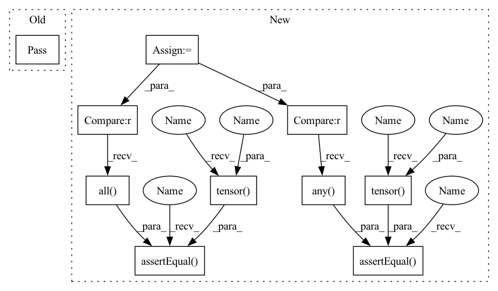

Pattern ID :5285
Before Change
def test_freeze_estimator(self):
//create model, freeze it
//infer two times on same datapoint, check if all equal
pass
if __name__ == "__main__":
unittest.main()After Change
download=True
)
dataloader = torch.utils.data.DataLoader(dataset=dataset,
batch_size=16,
shuffle=True)
batch = next(iter(dataloader))
@variational_estimator
class BayesianMLP(nn.Module):
def __init__(self, input_dim, output_dim):
super().__init__()
//self.linear = nn.Linear(input_dim, output_dim)
self.blinear1 = BayesianLinear(input_dim, 512)
self.blinear2 = BayesianLinear(512, output_dim)
def forward(self, x):
x_ = x.view(-1, 28 * 28)
x_ = self.blinear1(x_)
return self.blinear2(x_)
net = BayesianMLP(28*28, 10)
self.assertEqual((net(batch[0])!=net(batch[0])) .any() , torch.tensor(True ) )
net.freeze()
self.assertEqual((net(batch[0])==net(batch[0])).all() , torch.tensor(True ) )
pass
if __name__ == "__main__":In pattern: SUPERPATTERN
Frequency: 3
Non-data size: 10
Instances Fragment ID: 18896436
Project Name: piesposito/blitz-bayesian-deep-learning
Commit Name: 769d3e22647aa19ae5d12fe31e6f6ca79e915211
Time: 2020-03-03
Author: piero.skywalker@gmail.com
File Name: blitz/utils/tests/variational_estimator_test.py
M Class Name: TestVariationalInference
N Class Name: TestVariationalInference
M Method Name: test_freeze_estimator(1)
N Method Name: test_freeze_estimator(1)
M Parent Class: unittest.TestCase
N Parent Class: unittest.TestCase
M File Name: blitz/utils/tests/variational_estimator_test.py
N File Name: blitz/utils/tests/variational_estimator_test.py
M Start Line: 75
M End Line: 75
N Start Line: 75
N End Line: 106
Before Change
def test_freeze_estimator(self):
//create model, freeze it
//infer two times on same datapoint, check if all equal
pass
if __name__ == "__main__":
unittest.main()After Change
batch_size=16,
shuffle=True)
batch = next(iter(dataloader))
@variational_estimator
class BayesianMLP(nn.Module):
def __init__(self, input_dim, output_dim):
super().__init__()
//self.linear = nn.Linear(input_dim, output_dim)
self.blinear1 = BayesianLinear(input_dim, 512)
self.blinear2 = BayesianLinear(512, output_dim)
def forward(self, x):
x_ = x.view(-1, 28 * 28)
x_ = self.blinear1(x_)
return self.blinear2(x_)
net = BayesianMLP(28*28, 10)
self.assertEqual((net(batch[0])!=net(batch[0])) .any() , torch.tensor( True) )
net.freeze()
self.assertEqual((net(batch[0])==net(batch[0])).all() , torch.tensor( True) )
pass
if __name__ == "__main__": Fragment ID: 18896437
Project Name: piesposito/blitz-bayesian-deep-learning
Commit Name: 769d3e22647aa19ae5d12fe31e6f6ca79e915211
Time: 2020-03-03
Author: piero.skywalker@gmail.com
File Name: blitz/utils/tests/variational_estimator_test.py
M Class Name: TestVariationalInference
N Class Name: TestVariationalInference
M Method Name: test_freeze_estimator(1)
N Method Name: test_freeze_estimator(1)
M Parent Class: unittest.TestCase
N Parent Class: unittest.TestCase
M File Name: blitz/utils/tests/variational_estimator_test.py
N File Name: blitz/utils/tests/variational_estimator_test.py
M Start Line: 75
M End Line: 75
N Start Line: 75
N End Line: 106
Before Change
def test_freeze_module(self):
//create module, freeze
//check if two inferences keep equal
pass
def test_kl_divergence(self):
//create model, sample weights
//check if kl divergence between apriori and a posteriori is workingAfter Change
//create module, freeze
//check if two inferences keep equal
blinear = BayesianLinear(10, 10)
to_feed = torch.ones((1, 10))
self.assertEqual((blinear(to_feed) != blinear(to_feed)) .any() , torch.tensor( True) )
self.assertEqual((blinear.forward_frozen(to_feed) == blinear.forward_frozen(to_feed)).all() , torch.tensor( True) )
def test_kl_divergence(self):
//create model, sample weights
//check if kl divergence between apriori and a posteriori is working Fragment ID: 18896440
Project Name: piesposito/blitz-bayesian-deep-learning
Commit Name: 2835064e428713d1438fec5dea85825ab2140662
Time: 2020-03-02
Author: piero.skywalker@gmail.com
File Name: bbp_torch/modules/linear_bayesian_layer_test.py
M Class Name: TestLinearBayesian
N Class Name: TestLinearBayesian
M Method Name: test_freeze_module(1)
N Method Name: test_freeze_module(1)
M Parent Class: unittest.TestCase
N Parent Class: unittest.TestCase
M File Name: bbp_torch/modules/linear_bayesian_layer_test.py
N File Name: bbp_torch/modules/linear_bayesian_layer_test.py
M Start Line: 21
M End Line: 21
N Start Line: 38
N End Line: 41
Before Change
def test_variational_inference(self):
//create module, check if inference is variating
pass
def test_freeze_module(self):
//create module, freeze
//check if two inferences keep equalAfter Change
blinear = BayesianLinear(10, 10)
linear = nn.Linear(10, 10)
to_feed = torch.ones((1, 10))
self.assertEqual((blinear(to_feed) != blinear(to_feed)) .any() , torch.tensor( True) )
self.assertEqual((linear(to_feed) == linear(to_feed)).all() , torch.tensor( True) )
pass
def test_freeze_module(self):
//create module, freeze Fragment ID: 18896444
Project Name: piesposito/blitz-bayesian-deep-learning
Commit Name: 2835064e428713d1438fec5dea85825ab2140662
Time: 2020-03-02
Author: piero.skywalker@gmail.com
File Name: bbp_torch/modules/linear_bayesian_layer_test.py
M Class Name: TestLinearBayesian
N Class Name: TestLinearBayesian
M Method Name: test_variational_inference(1)
N Method Name: test_variational_inference(1)
M Parent Class: unittest.TestCase
N Parent Class: unittest.TestCase
M File Name: bbp_torch/modules/linear_bayesian_layer_test.py
N File Name: bbp_torch/modules/linear_bayesian_layer_test.py
M Start Line: 16
M End Line: 16
N Start Line: 27
N End Line: 33